Personal Trainer · Hipertrofia · Emagrecimento · Saúde e qualidade de vida
- Quero entrar pro timeAplicação de 60 segundos
- Ver resultados dos alunosAntes e depois do Team Fornari
- Falar direto no WhatsAppTira sua dúvida comigo
- Espaço Saúde: como chegarCaparaó, MG · [confirmar endereço no Maps]
- Instagram@felipe.fornari
Felipe Fornari · CREF [NÚMERO] · Caparaó e Alto Caparaó, MG
 Site feito pelaTheatrum
Site feito pelaTheatrum